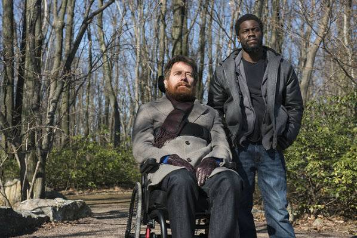

Toggle navigation
曾舒威
首页
介绍
你的文章
关于我们
欢迎阅读
你的文章
We are the
outstanding youth
of our time
《触不可及》“老白”与凯文·哈特携手演绎最佳挚友
由尼尔·博格执导，布莱恩·科兰斯顿、凯文·哈特、妮可·基德曼联袂主演的高分治愈喜剧片《触不可及》将于
11月22日
全国上映。今日，影片发布一张人物关系版海报，进一步揭露故事中菲利普（布莱恩·科兰斯顿饰）与戴尔（凯文·哈特饰）的真实关系。海报中，两位主人公相对而望，相比菲利普脸上轻松的表情，戴尔则略显沉重，不禁让人心生疑惑，二人之间是否发生了争吵、矛盾。
“老白”与凯文·哈特气氛紧绷引猜测莫逆之交或有新矛盾
据悉，电影《触不可及》改编自真人真事，讲述了瘫痪商人菲利普和黑人青年戴尔在朝夕相处中成为莫逆之交的故事。一次意想不到的面试，让性格、财富、学识都有着天差地别的两人碰撞到一起，笑料百出的同时，两人也相互影响着，相互救赎着。最终，菲利普在戴尔的帮助下燃起对人生的希望，戴尔也在菲利普的熏陶下实现了人生的逆袭。

从海报中可以看出，画面的整体基调风格为暖色调，让人倍感温馨。远处两个飘在天空的模糊人影，也与此前曝光的预告片中，菲利普和戴尔一起坐滑翔伞的片段相呼应，象征着两人真挚动人的友情。然而，相对而立的两人，氛围上又略显紧绷，似有矛盾在暗处蠢蠢欲动，不禁让人对两位男主的关系产生担忧。究竟两人在这段陪伴之旅中会遇到怎样的矛盾，两人又能否顺利达成和解？还需影片上映时一探究竟。
点击返回个人博客
ALL RIGHTS RESERVED. COPYRIGHT © 2014.